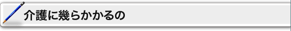

|

|
 |


 |
要介護の費用についてご案内します。
|
 |
要介護の費用
介護保険のサービスを利用した場合、原則としてサービス費用の１割を利用者が負担します。残りの9割は介護保険から給付されます。
また、施設でのサービスを利用した場合には、１割の自己負担の他に、食費・居住費（滞在費）や日常生活費の自己負担があります。
例：居宅（地域密着型）サービス・介護予防（地域密着型）サービスを利用した場合
| 要介護度 |
居宅サービス利用限度額 |
費用の目安 |
利用者負担の目安 |
| 要支援１ |
4,970 単位 |
49,700 円 |
4,970 円 |
| 要支援２ |
10,400 単位 |
104,000 円 |
10,400 円 |
| 要介護１ |
16,580 単位 |
165,800 円 |
16,580 円 |
| 要介護２ |
19,480 単位 |
194,800 円 |
19,480 円 |
| 要介護３ |
26,750 単位 |
267,500 円 |
26,750 円 |
| 要介護４ |
30,600 単位 |
306,000 円 |
30,600 円 |
| 要介護５ |
35,830 単位 |
358,300 円 |
35,830 円 |
※単位とは各種類の介護サービスにわり振られている点数のことで、サービスの種類や時間によってさまざまな点数(単位)が定められています。
ただし、細かな計算等は事業者や施設が行いますので、利用者自身が計算などを行う必要はありません。
※利用限度額とは、保険が適用できる費用の上限であり、利用するサービス費用の１割負担分に係る１ヶ月の費用が利用限度額内である場合に、費用の９割分が保険から給付されます。利用限度額を超える利用は全額自己負担です。
※サービスごとに設定されている単位(料金)は全国共通です。なお、お住まいになっている地域によって実情(賃金・人件費・物価等)はさまざまですので、その地域の実情に応じて利用料に対する掛率が設定されています。
| サービス |
対象サービスの例 |
サービスの利用
にかかる負担 |
| 訪問サービス |
訪問介護・訪問看護・介護予防訪問介護など |
サービス費用の１割 |
| 通所サービス |
通所介護・小規模多機能型居宅介護など |
サービス費用の１割＋日常生活費＋食費 |
| 短期入居サービス |
短期入居生活介護など |
サービス費用の１割＋日常生活費＋食費＋滞在費 |
| 入居サービス |
認知症対応型共同生活介護など |
サービス費用の１割＋日常生活費＋食費＋家賃 |
| 施設サービス |
介護老人福祉施設（特別養護老人ホーム）・介護老人保健施設など |
サービス費用の１割＋日常生活費＋食費＋居住費 |
|
以下の項目の費用がかかることが考えられます
ディサービス
認知症対応型通所介護・介護予防認知症対応型通所介護費
認知症対応型通所介護・介護予防認知症対応型通所介護費
（6時間以上8時間未満の場合 1割個人負担）
| 要支援１ |
4,350円／日 |
| 要支援２ |
4,600円／日 |
| 経過的要介護 |
4,520円／日 |
| 要介護１ |
4,690円／日 |
| 要介護２ |
4,860円／日 |
| 要介護３ |
5,030円／日 |
| 要介護４ |
5,200円／日 |
| 要介護５ |
5,370円／日 |
グループホーム
認知症対応型共同生活介護・介護予防認知症対応型共同生活介護
介護保険を利用してサービスが受けられますが、施設の設備・運営基準や入居する居室の種類、および地域によって料金は微妙に異なっています。
ここでは基準単価で紹介しています。詳細はお住まいの地域、または施設で確認してください。
|
1）介護保険費 基本単位
（1日：1割個人負担）
| 要支援２ |
8,310円／日 |
| 要介護１ |
8,310円／日 |
| 要介護２ |
8,480円／日 |
| 要介護３ |
8,650円／日 |
| 要介護４ |
8,820円／日 |
| 要介護５ |
9,000円／日 |
|
1）介護保険費 基本単位
（1ヶ月：1割個人負担）
| 要支援２ |
249,300円／日 |
| 要介護１ |
249,300円／日 |
| 要介護２ |
254,400円／日 |
| 要介護３ |
259,500円／日 |
| 要介護４ |
264,600円／日 |
| 要介護５ |
270,000円／日 |
|
2）短期利用共同生活介護（ショートスティ）
一定の要件を満たしている事業所において １ユニット1名限定で30日以内の利用 |
（1割個人負担）
| 要支援２ |
8,610円／日 |
| 要介護１ |
8,610円／日 |
| 要介護２ |
8,780円／日 |
| 要介護３ |
8,950円／日 |
| 要介護４ |
9,120円／日 |
| 要介護５ |
9,300円／日 |
|
（1ヶ月： 1割個人負担）
| 要支援２ |
258,300円／日 |
| 要介護１ |
258,300円／日 |
| 要介護２ |
263,400円／日 |
| 要介護３ |
268,500円／日 |
| 要介護４ |
273,600円／日 |
| 要介護５ |
279,000円／日 |
|
|